- Skapa en katalog för webbsidan
- Tryck på win+e för att öppna filhanteraren
- Navigera till katalogen som du vill lägga din projektkatalog i (exempelvis Dokument/webbutveckling) 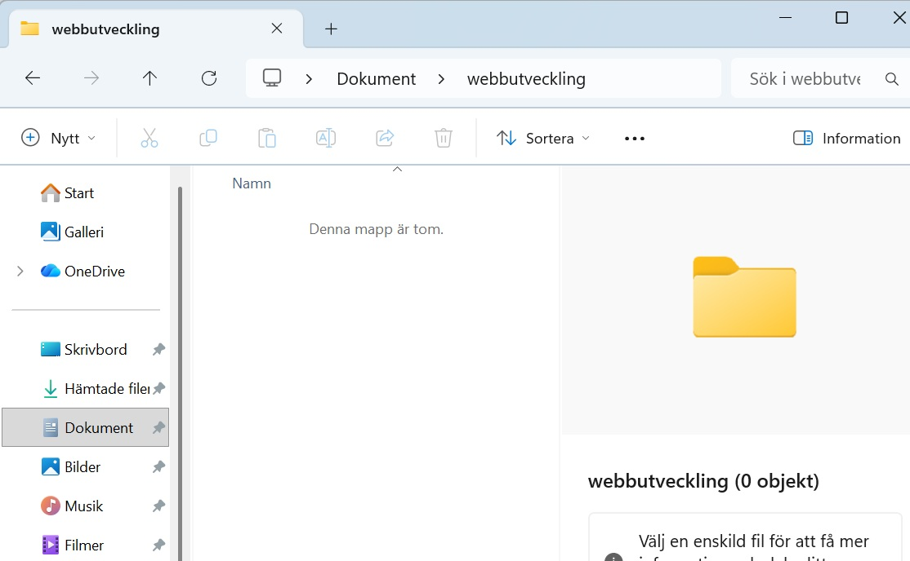
- Har du inte redan en webbutvecklingskatalog för dina projekt så kan du skapa ett genom att trycka shift+ctrl+n och döpa katalogen till webbutveckling
-
Skapa en ny katalog för din webbsida genom att trycka shift+ctrl+n och skriv vad
du vill att katalogen ska heta.
Den här sidans katalog döper jag till arbeta-med-github 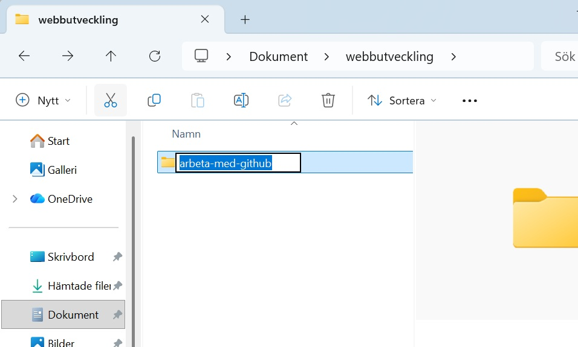 - Gå in i katalogen. Det är här vi ska lägga filerna för hemsidan
-
Skapa en html-fil
Html-filer är textfiler och det finns flera olika bra editorer för att skriva dem. Är du osäker på vilken editor att använda så rekommenderar jag att använda Visual Studio Code (VSCode).
- Starta VSCode genom att trycka win-knappen och sedan skriva vscode 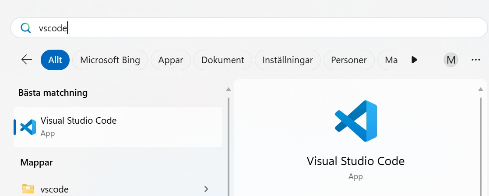
- Öppna katalogen som du ska lägga filen i (dokument/webbutveckling/ arbeta-med-github) genom att trycka ctrl+k ctrl+o 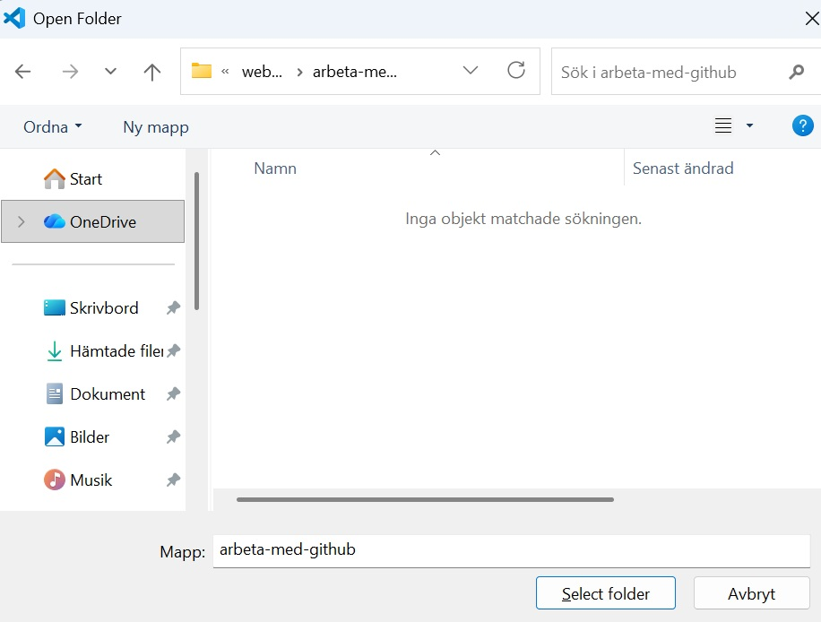 Tryck sedan på select folder
- Skapa en ny fil som heter index.html 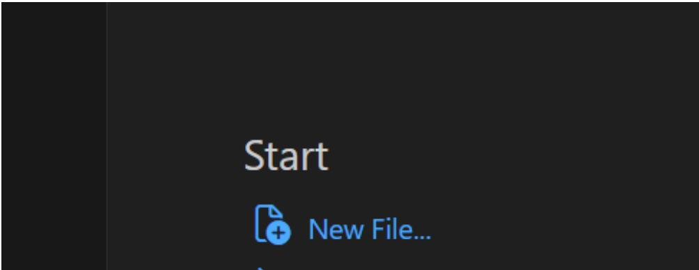 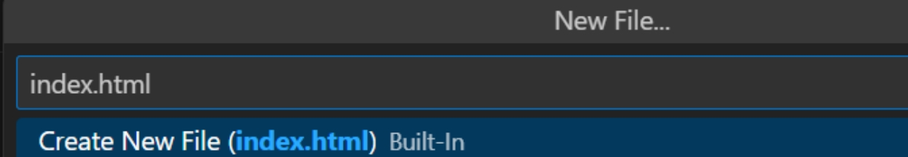
- Skriv text i dokumentet för en grundläggande hemsida: 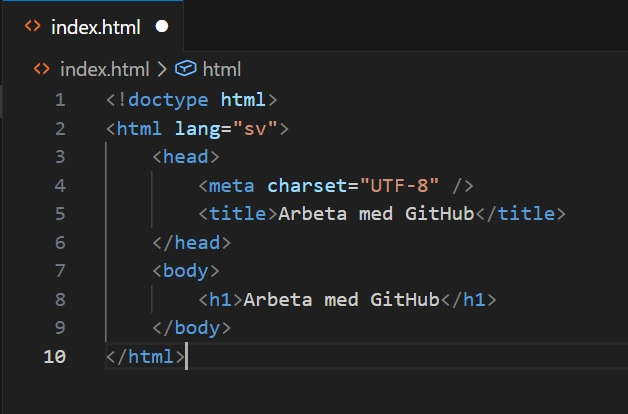
- Tryck ctrl+s för att spara
- Testa hemsidan genom att trycka f5 (du kanske behöver trycka fn+f5) och välj sedan Web App (chrome) 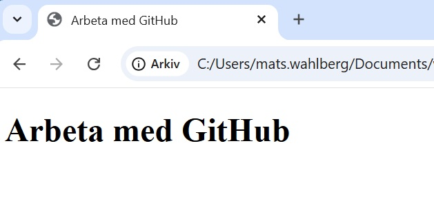 (hemsidan kan även ses genom att öppna index.html i utforskaren) Nu har du gjort en hemsida som vi kan lägga upp på internet
- Skapa ett GitHub repo (repository) och koppla till din katalog på din dator.
- Öppna GitHub (github.com) i din webbläsare.
- Logga in (skapa ett konto om du inte redan har ett)
- Skapa ett nytt repo (repository) genom att trycka på den gröna New-knappen 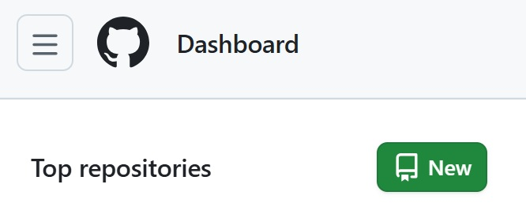
- Fyll i namn på repot 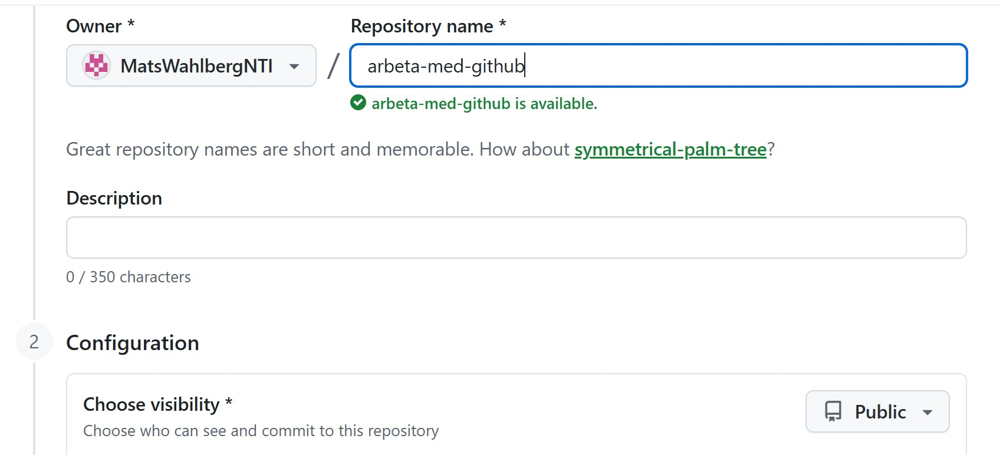 Observera att visibility ska vara Public eftersom vi ska publicera sidan.
- Scrolla ner och tryck på Create repository 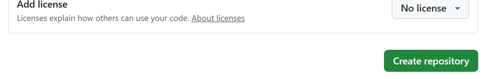
- Nu är du inne på ditt repo. Scrolla ner lite så finns instruktioner på hur en katalog på din dator kopplas till GitHub. Observera att några av raderna ska bytas eftersom vi har skapat en index.html-fil som vi ska lägga upp och behöver därför inte skapa en README.md-fil. 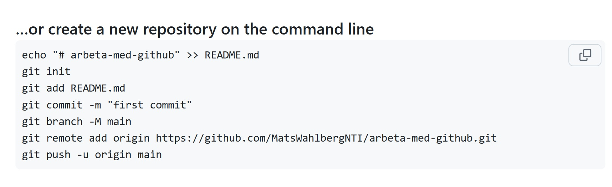
- De kommandon som vi ska mata in ska skrivas i en terminal/kommandotolk. Öppna terminalen genom att trycka på adressfältet i utforskaren 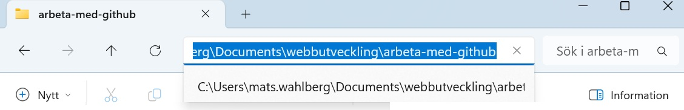 och skriv cmd 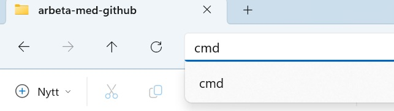 vilket öppnar kommandotolken 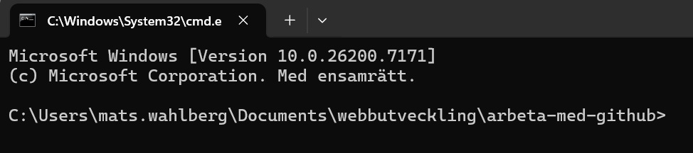 Här ska sökvägen c:\... vara till din katalog med hemsidan.
-
För att initiera git för katalogen:
Skriv git init 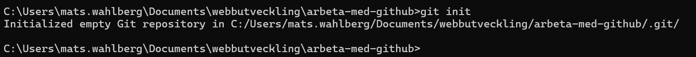 -
För att lägga till alla filer i katalogen i Git skriv:
Skriv git add . 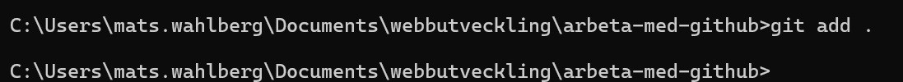 git är programmet som körs, add lägger till och . betyder alla filer och kataloger i katalogen. Vill man lägga till en specifik fil går det att skriva exempelvis git add index.html -
Nästa steg är att ”commita” filerna (bekräftar att vi ska använda filerna )
genom att skriva:
git commit -m ”first commit” 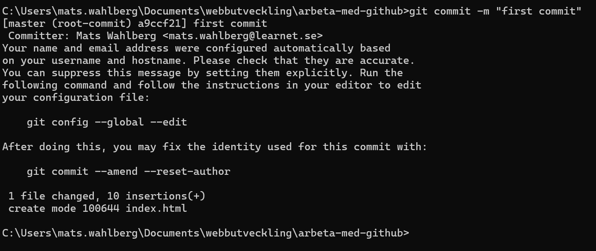 -m gör att vi ska skriva en kommentar till commiten. Kommentaren gör det mycket lättare att hålla koll på vad som ändrats i projektet. Speciellt om det är flera personer som arbetar på samma projekt - Fortsätt sedan på samma sätt att mata in rad för rad från instruktionerna på github.com. Observera att instruktionerna för den näst nedersta raden kommer vara olika varje gång du skapar ett repository 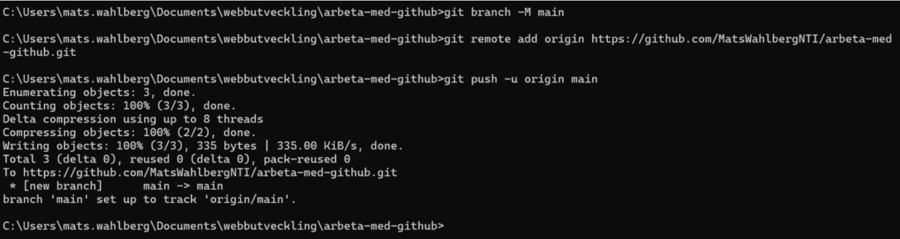
- Kolla sedan så att din GitHub har blivit uppdaterad genom att trycka på f5 (eller uppdatera sidan på annat sätt). Nu ska din kod ligga under code: 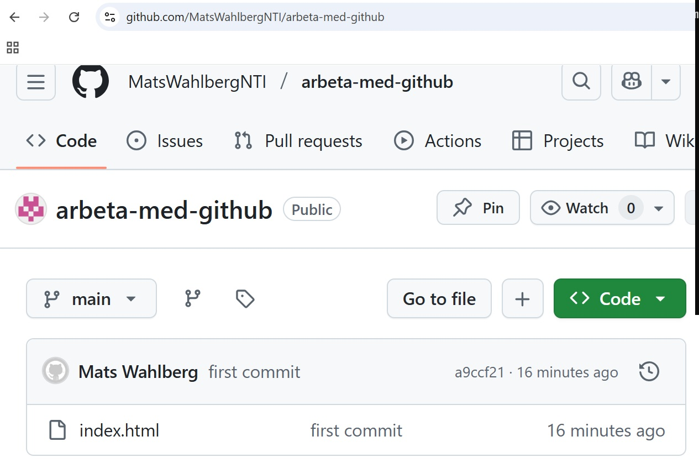
- Publicera sidan med GitHub pages
- Gå till settings på din GitHub sida: 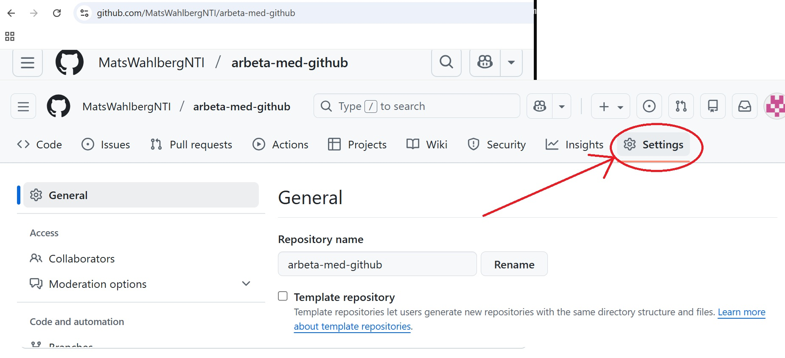
-
Gå sedan in i Pages.
Scrolla ner tills du ser pages till vänster och tryck på den länken: 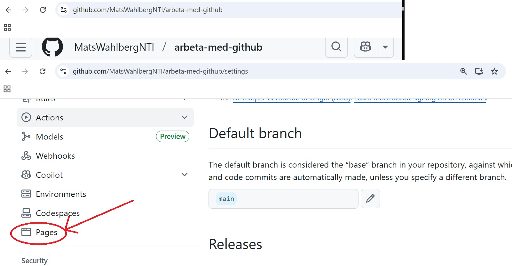 - På Pages sidan branch från None till main och sedan spara: 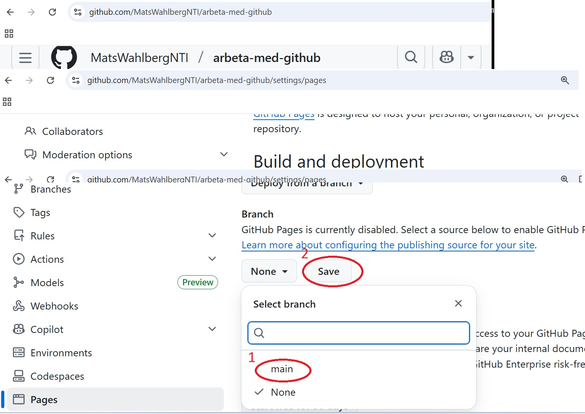 Det kommer ta någon minut för GitHub att lägga upp sidan på internet.
-
Gå tillbaka till code
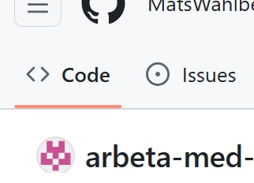 - Scrolla ner för att hitta Deployments och clicka sedan på github-pages (det kan ta någon minut för den att dyka upp så uppdatera sidan tills den kommer fram): 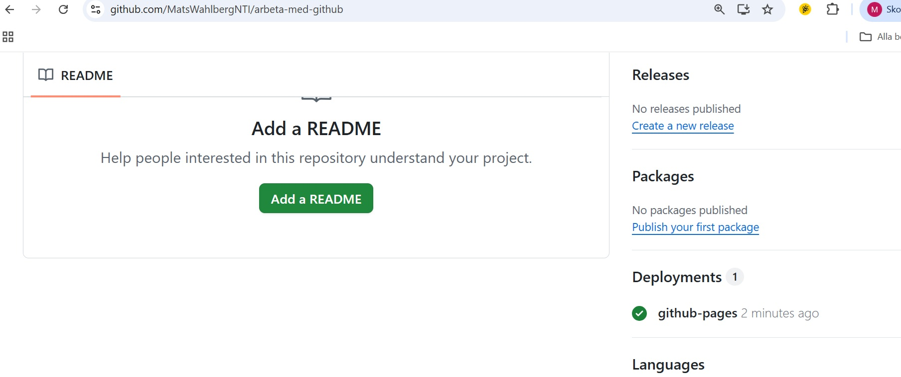
- Clicka på länken under github-pages: 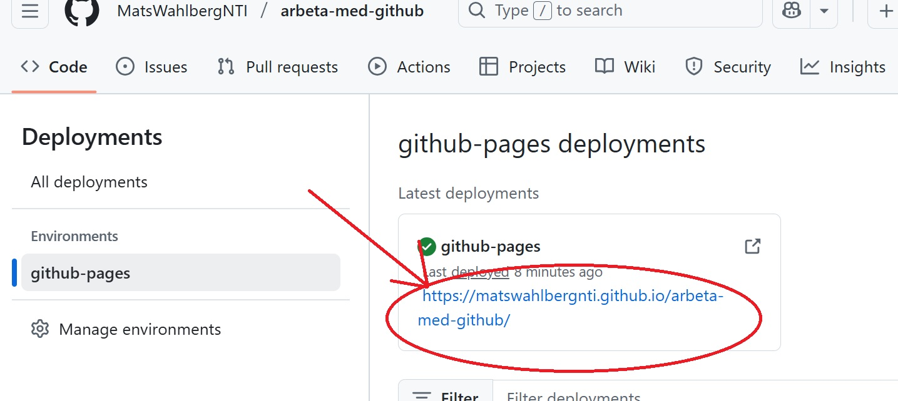
- Om allt har fungerat kommer du nu komma till din hemsida: 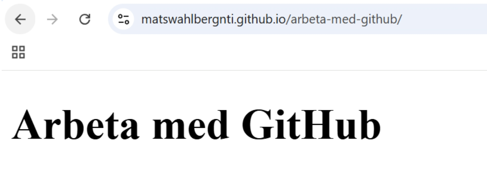
-
Uppdatera GitHub efter ändring i hemsidan.
Efter att det gjorts ändringar på hemsidan så behöver man uppdatera GitHub. Det här dokumentet kommer gå igenom hur vi gör det i terminal men det går även bra att använda sig av inbygda metoder i vscode. Antag att en ny paragraf har lagts till på hemsidan:

-
Efter filer blivit ändrade så gå tillbaka till terminalen och skriv:
git add . -
Skriv sedan git commit –m med en beskrivande kommentar:
git commit -m ”added a paragraf” -
Pusha sedan ändringarna till GitHub genom att skriva git push:
git push 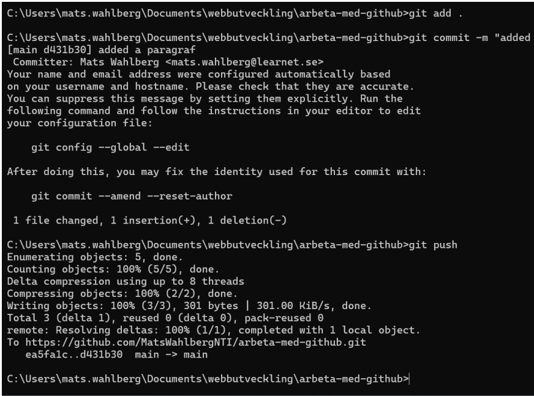 - Kontrollera att förändringarna kommit in till GitHub: 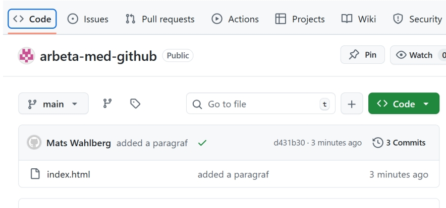